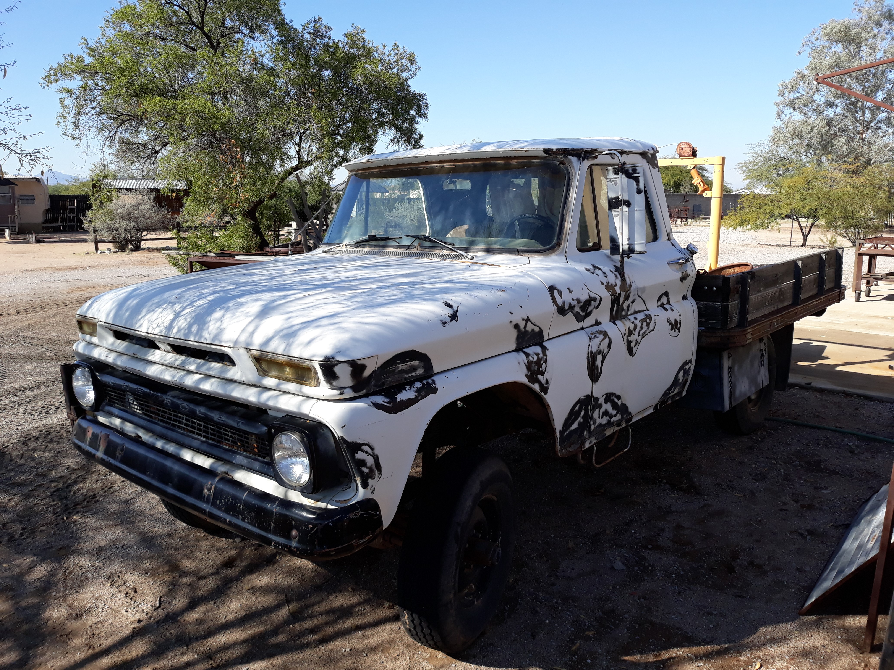
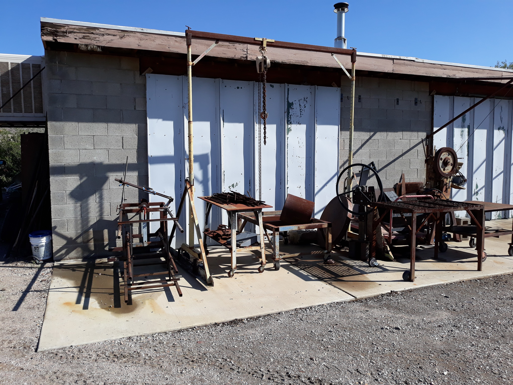
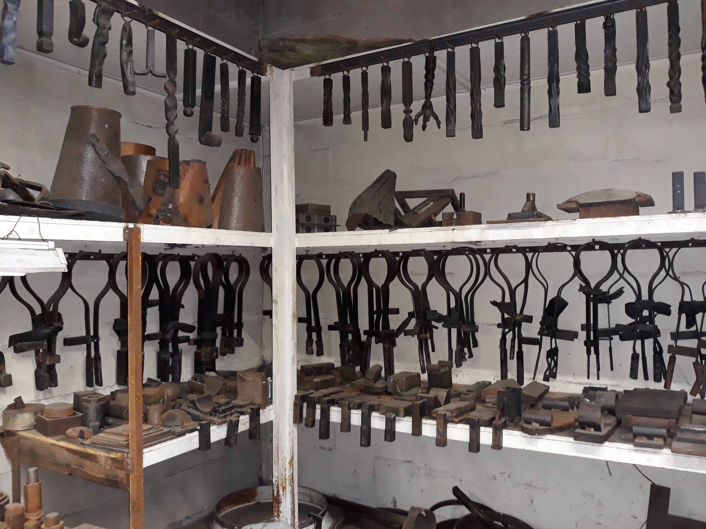
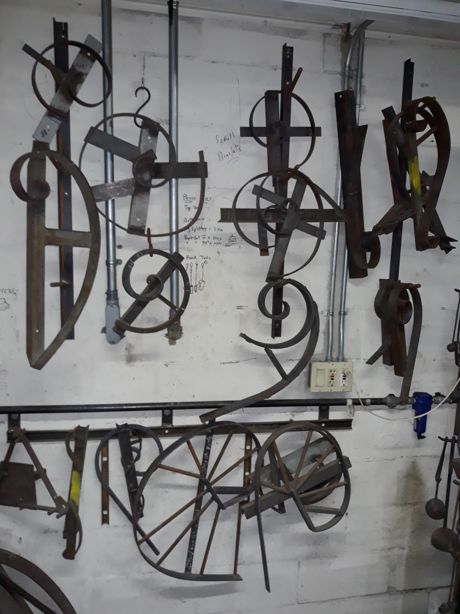

| Name | Description | Price |
|---|
| 1965 chevy truck | 1965 chevy truck 4x4 converted to two wheel drive, with flat bed and boom crane. (no transfer case, but pumpkin and front 4x4 axel intact) runs excellent. used as my "go to" for single handedly moving projects to and from shop. original long bed box, now trailer included w/ straight axel and inner changeable tires and rims.
 |
$4,500.00 |
| trailers | 4 ea. trailers, all different sizes, used to stage jobs and interchange work. these coincide with the quad 4x4 and make the shop very versatile. note: not licensed. will provide bill of sale. 150.00+ ea. | $600.00 |
| Hill Billy boom | Hill Billy boom. 3/4 to 1 ton axel converted to 180 degree swinging boom. has rolling 1/2 ton chain fall on I beam and can pick "it up " by your self. | $1,200.00 |
| gantry crane | Telescoping adjustable gantry crane 6' and 8' wide w/ 1 ton chain fall. on casters
 |
$1,800.00 |
| manual log lathe | manual log lathe, 6' x 18" dia. is my max. can go bigger. on cast | $450.00 |
| table top | delta, table top wood band saw on base with casters | $225.00 |
| BT-12 Alva Allen | BT-12 Alva Allen OBI punch press w/strong motor. Free turning, almost operational. A few dies | $2,500.00 |
| steel rack, for 6' + drops | 1 piece steel rack, for 6' + drops, interior (clean steel steal) full, approx. 1,000 lbs. of drops | $250.00 |
| DBL wall | DBL wall, wood burning box stove. Riteway model 2000 18”wx 36”dx 36” h fits 26” log. removable ash tray | $450.00 |
| propane heater | Reznor industrial propane heater. Hanging type. low hours | $350.00 |
| H-beams | 2 ea. H-beams, perfect for building power hammers, presses or H press. | $200.00 |
| H-beams | 2 ea. H-beams, perfect for building power hammers, presses or H press. 14 ½” 14 ½”x 80” h ..7/8” thick, ½” web 103 lbs. A foot approx.. 670 lbs. e | $200.00 |
| Tooling for pneumatic hammers. | Tooling for pneumatic hammers 100 lb. and 125 lb. (note: inter changeable) spring dies. 35 ea. ball, bead, texture, fuller, tenon, etc. 100.00 ea. x 35
 |
$3,500.00 |
| bottom dies. | bottom dies: 8 ea. hot cut, v-block, texture, etc. 100.00 ea. | $800.00 |
| top change out dies. | botop change out dies: 4 ea. radius, texture, offset bending, etc. 125.00 ea | $500.00 |
| log splitter conversion tool. | log splitter conversion tool | $150.00 |
| Custom tool rack. | Custom tool rack, signed by artist, for press tooling | $1,800.00 |
| Scroll Jigs. | Scroll Jigs
 |
Please Contact |